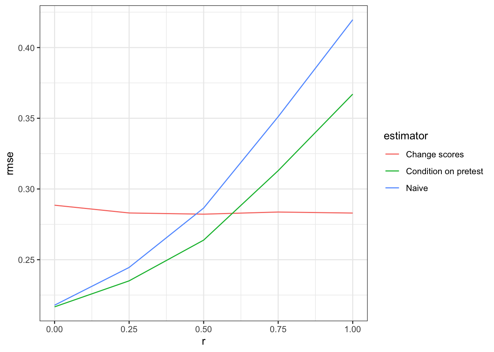
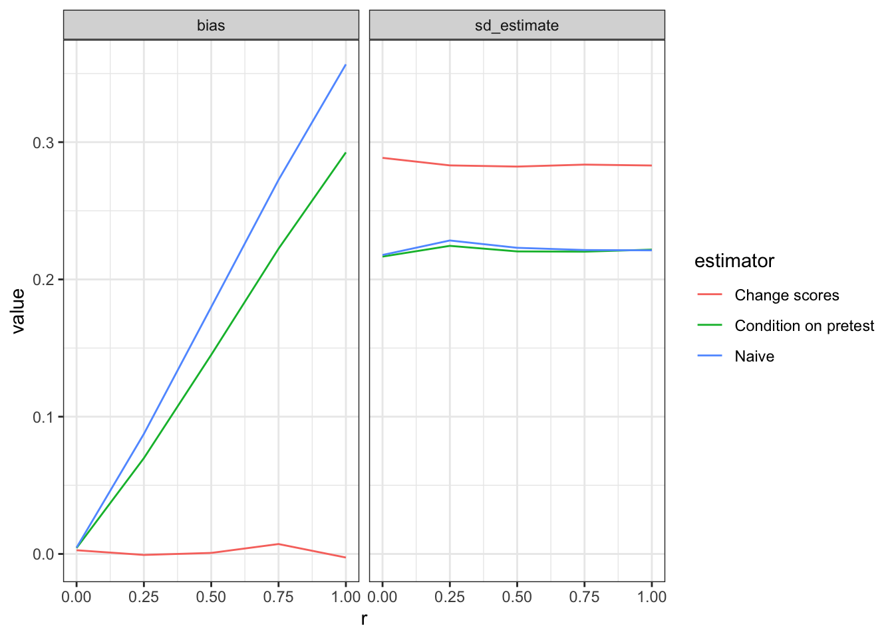

r <- 1 # magnitude of confounding
prepost <-
declare_model(N = 100,
u = rnorm(N) / 2,
e1 = rnorm(N),
e2 = rnorm(N),
Y1 = u + e1,
potential_outcomes(Y2 ~ Z + u + e2)
) +
declare_assignment(Z = simple_ra(N, prob_unit = r * pnorm(u) + (1 - r) * .5)) +
declare_inquiry(ate = mean(Y2_Z_1 - Y2_Z_0)) +
declare_measurement(Y2 = reveal_outcomes(Y2 ~ Z),
D = Y2 - Y1) +
declare_estimator(Y2 ~ Z, model = lm_robust, inquiry = "ate",
label = "Naive") +
declare_estimator(Y2 ~ Z + Y1, model = lm_robust, inquiry = "ate",
label = "Condition on pretest") +
declare_estimator(D ~ Z, model = lm_robust, inquiry = "ate",
label = "Change scores") We’re in an observational study setting in which treatment assignment was not controlled by the researcher. We have pre-treatment data on baseline outcomes and we’d like to incorporate them, mainly to decrease bias due to confounding and but also, ideally, to increase precision. One approach is to use the difference between pre and post outcomes as the outcome variable; another is to use the baseline data as a control. Which is better?
For a discussion see this post by Andrew Gelman and follow up comments by Winston Lin (that led us to the Allison reference we use below) and by Jens Hainmueller (that describes this logic).
In this post, design diagnosis shows that which approach is best depends on how outcomes are generated in the first place. A differencing approach might sometimes be effective at removing confounding bias but might do so at a cost of greater variance. Using this approach might not be optimal if confounding risks are small. Indeed, when there is no confounding (as in a randomized experiment), controlling is generally superior to differencing.
Assessing tradeoffs via diagnosis
To illustrate, we declare a two-period, two-arm design in which a unit-specific shock \(u\) (with standard deviation .5) is present in each of the two periods. This shock is also possibly correlated with treatment assignment. In addition there are independent unit/period specific shocks, \(e_1\) and \(e_2\) (with unit standard deviations). For the illustration we assume a unit treatment effect:
\[Y_1 = u + e_1\]
\[Y_2 = Z + u + e_2\]
A parameter in the design, \(r\) controls the degree of confounding. With \(r = 0\) there is as-if random assignment; with \(r = 1\) treatment assignment probabilities are directly related to \(u\).
Here is the declaration:
We will diagnose a sequence of designs with different degrees of confounding:
prepost_designs <- redesign(prepost, r = seq(from = 0, to = 1, length = 5))
diagnosis <- diagnose_design(prepost_designs)Diagnosis reveals that the change score approach dominates the condition-on-pretest approach in terms of root mean squared error (RMSE) when the risk of bias is high but not when it is low.
get_diagnosands(diagnosis) %>%
ggplot(aes(as.numeric(as.character(r)), rmse)) +
geom_line(aes(color = estimator)) +
theme_bw() + xlab("r")
What drives the tradeoff?
We can take a closer look by decomposing RMSE into bias and variance.
Regardless of the value of r, change scores exhibit much less bias than conditioning. Units that are higher in the unobserved variable \(u\) are higher in \(Y_2\) and also more likely to be assigned to \(Z\). Putting \(Y_1\) on the righthand side, however, does not solve this confounding, for reasons explained in Allison (1990) — in short, the regression model with \(Y_1\) on the righthand side assumes that \(Y_1\) is uncorrelated with the error term, which it is not.1
Differencing always does well here in terms of bias because it removes the shock, \(u\), that is associated with treatment assignment: \(D = Y_2 - Y_1 = Z + u + e_2- u - e_1 = Z + e_2 - e_1\).
The naive approach does poorly here in terms of bias as it does nothing to account for confounding. Controlling for the pretest only partially removes the bias, which can remain quite substantial at high value of r.
The bias advantage for change scores is smaller at lower values of r and can be outweighed by the additional variance it introduces into the estimates. Change scores difference out \(u\) at a cost of taking on both the \(e_1\) and \(e_2\) errors. In this design, \(Var(Y_2 | Z) = Var(u + e_2) = 1.25\) whereas \(Var(Y_2 - Y_1 | Z) = Var(u + e_1 - u - e_2) = Var(e_1 - e_2) = 2\). Much noisier.

Takeaway
The takeaway is that with non-experimental designs you cannot have a general preference over these two approaches to taking account of baseline data. You need to use knowledge about how data is generated to determine the right approach. The type of confounding matters, as does the size of different types of errors. If you can speculate about these then diagnosis can help select a strategy (though even after diagnosis, how you choose can depend in part on how you weigh bias and error).
For experimental designs (represented here by the cases of r = 0), the choice between the two approaches is much clearer: don’t use change scores, control. The risk of bias is neglibile (see Lin (2013) on this point) and the estimates will be far more precise.
References
Allison, Paul D. 1990. “Change Scores as Dependent Variables in Regression Analysis.” Sociological Methodology, 93–114.
Lin, Winston. 2013. “Agnostic Notes on Regression Adjustments to Experimental Data: Reexamining Freedman’s Critique.” The Annals of Applied Statistics 7 (1): 295–318.
Footnotes
Indeed although the differencing approach has an “implied” coefficient of 1 on \(Y_1\), Allison (p 103) shows that the average estimated coefficient on \(Y_1\) from the control approach will be less than 1. In our case it is, on average, just 0.18.↩︎